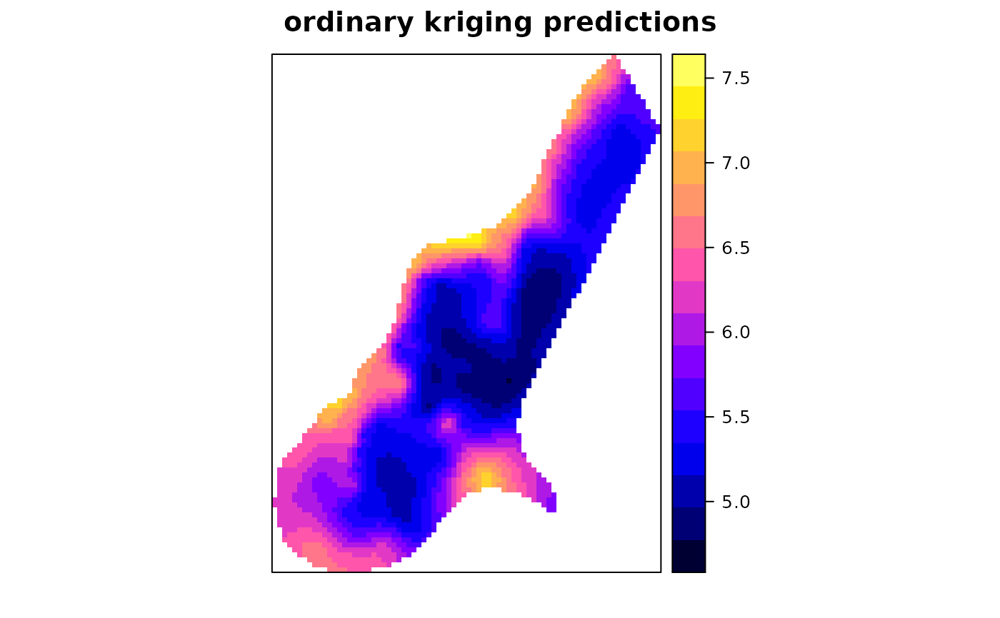
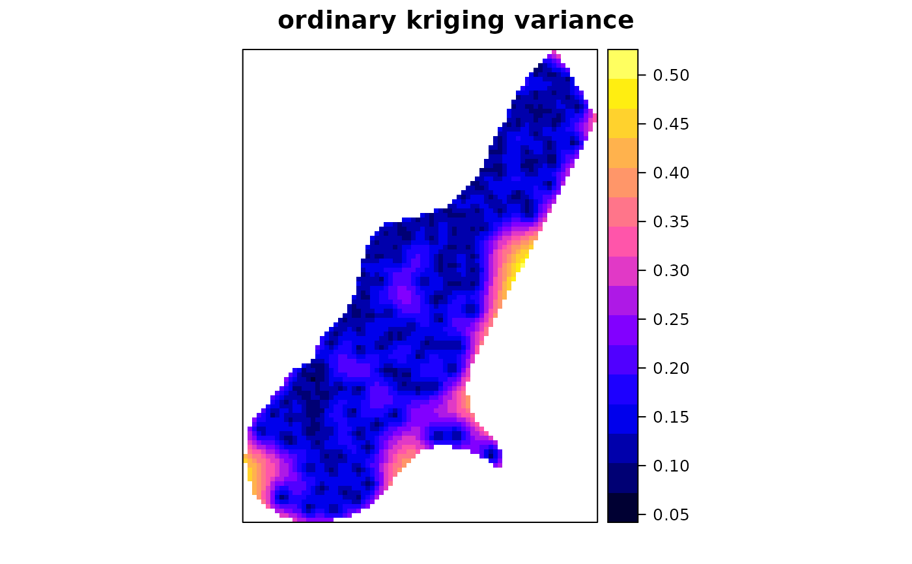
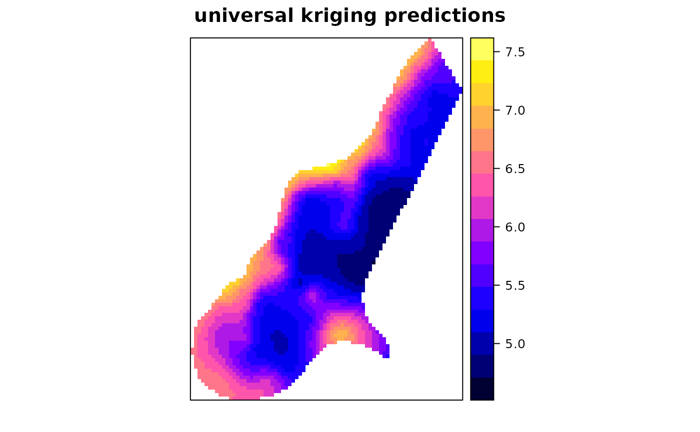
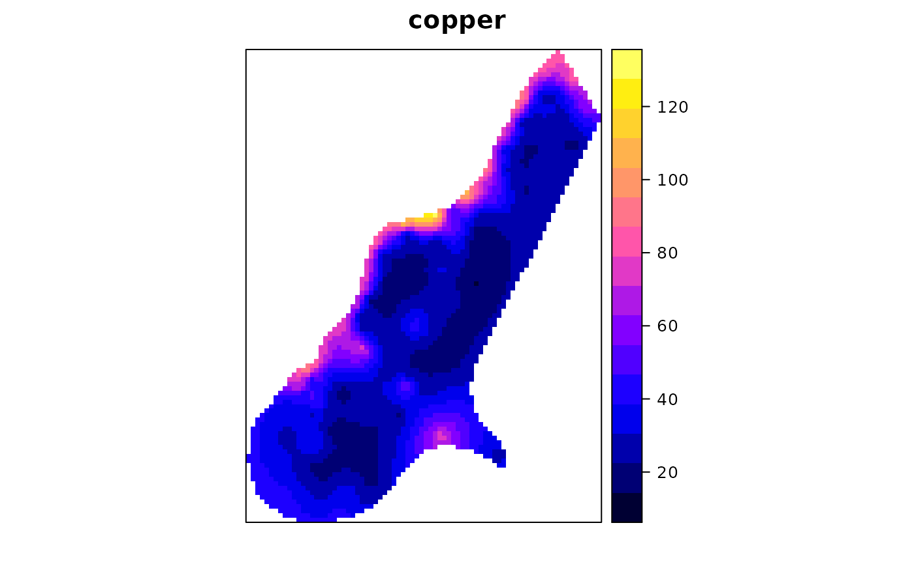

Simple, Ordinary or Universal, global or local, Point or Block Kriging, or simulation.
krige.RdFunction for simple, ordinary or universal kriging (sometimes called external drift kriging), kriging in a local neighbourhood, point kriging or kriging of block mean values (rectangular or irregular blocks), and conditional (Gaussian or indicator) simulation equivalents for all kriging varieties, and function for inverse distance weighted interpolation. For multivariable prediction, see gstat and predict
Usage
krige(formula, locations, ...)
krige.locations(formula, locations, data, newdata, model, ..., beta, nmax
= Inf, nmin = 0, omax = 0, maxdist = Inf, block, nsim = 0, indicators = FALSE,
na.action = na.pass, debug.level = 1)
krige.spatial(formula, locations, newdata, model, ..., beta, nmax
= Inf, nmin = 0, omax = 0, maxdist = Inf, block, nsim = 0, indicators = FALSE,
na.action = na.pass, debug.level = 1)
krige0(formula, data, newdata, model, beta, y, ..., computeVar = FALSE,
fullCovariance = FALSE)
idw(formula, locations, ...)
idw.locations(formula, locations, data, newdata, nmax = Inf,
nmin = 0, omax = 0, maxdist = Inf, block, na.action = na.pass, idp = 2.0,
debug.level = 1)
idw.spatial(formula, locations, newdata, nmax = Inf, nmin = 0,
omax = 0, maxdist = Inf, block = numeric(0), na.action = na.pass, idp = 2.0,
debug.level = 1)
idw0(formula, data, newdata, y, idp = 2.0)Arguments
- formula
formula that defines the dependent variable as a linear model of independent variables; suppose the dependent variable has name
z, for ordinary and simple kriging use the formulaz~1; for simple kriging also definebeta(see below); for universal kriging, supposezis linearly dependent onxandy, use the formulaz~x+y- locations
object of class
Spatialorsf, or (deprecated) formula defines the spatial data locations (coordinates) such as~x+y- data
data frame: should contain the dependent variable, independent variables, and coordinates, should be missing if locations contains data.
- newdata
object of class
Spatial,sforstarswith prediction/simulation locations; should contain attributes with the independent variables (if present).- model
variogram model of dependent variable (or its residuals), defined by a call to vgm or fit.variogram; for
krige0also a user-supplied covariance function is allowed (see example below)- beta
for simple kriging (and simulation based on simple kriging): vector with the trend coefficients (including intercept); if no independent variables are defined the model only contains an intercept and beta should be the simple kriging mean
- nmax
for local kriging: the number of nearest observations that should be used for a kriging prediction or simulation, where nearest is defined in terms of the space of the spatial locations. By default, all observations are used
- nmin
for local kriging: if the number of nearest observations within distance
maxdistis less thannmin, a missing value will be generated; see maxdist- omax
see gstat
- maxdist
for local kriging: only observations within a distance of
maxdistfrom the prediction location are used for prediction or simulation; if combined withnmax, both criteria apply- block
block size; a vector with 1, 2 or 3 values containing the size of a rectangular in x-, y- and z-dimension respectively (0 if not set), or a data frame with 1, 2 or 3 columns, containing the points that discretize the block in the x-, y- and z-dimension to define irregular blocks relative to (0,0) or (0,0,0)---see also the details section of predict. By default, predictions or simulations refer to the support of the data values.
- nsim
integer; if set to a non-zero value, conditional simulation is used instead of kriging interpolation. For this, sequential Gaussian or indicator simulation is used (depending on the value of
indicators), following a single random path through the data.- indicators
logical, only relevant if
nsimis non-zero; if TRUE, use indicator simulation; else use Gaussian simulation- na.action
function determining what should be done with missing values in 'newdata'. The default is to predict 'NA'. Missing values in coordinates and predictors are both dealt with.
- debug.level
debug level, passed to predict; use -1 to see progress in percentage, and 0 to suppress all printed information
- ...
for krige: arguments that will be passed to gstat; for
krige0: arguments that will be passe tomodel- idp
numeric; specify the inverse distance weighting power
- y
matrix; to krige multiple fields in a single step, pass data as columns of matrix
y. This will ignore the value of the response informula.- computeVar
logical; if TRUE, prediction variances will be returned
- fullCovariance
logical; if FALSE a vector with prediction variances will be returned, if TRUE the full covariance matrix of all predictions will be returned
Methods
- formula = "formula", locations = "formula"
locations specifies which coordinates in
datarefer to spatial coordinates- formula = "formula", locations = "Spatial"
Object locations knows about its own spatial locations
- formula = "formula", locations = "NULL"
used in case of unconditional simulations; newdata needs to be of class Spatial
Details
Function krige is a simple wrapper method around gstat
and predict for univariate kriging prediction and conditional
simulation methods available in gstat. For multivariate prediction or
simulation, or for other interpolation methods provided by gstat (such as
inverse distance weighted interpolation or trend surface interpolation)
use the functions gstat and predict directly.
Function idw performs just as krige without a model being
passed, but allows direct specification of the inverse distance weighting
power. Don't use with predictors in the formula.
For further details, see predict.
Value
if locations is not a formula, object of the same class as
newdata (deriving from Spatial); else a data frame
containing the coordinates of newdata. Attributes columns
contain prediction and prediction variance (in case of kriging) or the
abs(nsim) columns of the conditional Gaussian or indicator
simulations
krige0 and idw0 are alternative functions with reduced
functionality and larger memory requirements; they return numeric vectors
(or matrices, in case of multiple dependent) with predicted values only;
in case computeVar is TRUE, a list with elements pred and
var is returned, containing predictions, and (co)variances (depending
on argument fullCovariance).
References
N.A.C. Cressie, 1993, Statistics for Spatial Data, Wiley.
Pebesma, E.J., 2004. Multivariable geostatistics in S: the gstat package. Computers and Geosciences, 30: 683-691.
Note
Daniel G. Krige is a South African scientist who was a mining engineer
when he first used generalised least squares prediction with spatial
covariances in the 50's. George Matheron coined the term kriging
in the 60's for the action of doing this, although very similar approaches
had been taken in the field of meteorology. Beside being Krige's name,
I consider "krige" to be to "kriging" what "predict" is to "prediction".
Examples
library(sp)
data(meuse)
coordinates(meuse) = ~x+y
data(meuse.grid)
gridded(meuse.grid) = ~x+y
m <- vgm(.59, "Sph", 874, .04)
# ordinary kriging:
x <- krige(log(zinc)~1, meuse, meuse.grid, model = m)
#> [using ordinary kriging]
spplot(x["var1.pred"], main = "ordinary kriging predictions")

spplot(x["var1.var"], main = "ordinary kriging variance")

# simple kriging:
x <- krige(log(zinc)~1, meuse, meuse.grid, model = m, beta = 5.9)
#> [using simple kriging]
# residual variogram:
m <- vgm(.4, "Sph", 954, .06)
# universal block kriging:
x <- krige(log(zinc)~x+y, meuse, meuse.grid, model = m, block = c(40,40))
#> [using universal kriging]
spplot(x["var1.pred"], main = "universal kriging predictions")

# krige0, using user-defined covariance function and multiple responses in y:
# exponential variogram with range 500, defined as covariance function:
v = function(x, y = x) { exp(-spDists(coordinates(x),coordinates(y))/500) }
# krige two variables in a single pass (using 1 covariance model):
y = cbind(meuse$zinc,meuse$copper,meuse$lead,meuse$cadmium)
x <- krige0(zinc~1, meuse, meuse.grid, v, y = y)
meuse.grid$zinc = x[,1]
spplot(meuse.grid["zinc"], main = "zinc")
meuse.grid$copper = x[,2]
spplot(meuse.grid["copper"], main = "copper")

# the following has NOTHING to do with kriging, but --
# return the median of the nearest 11 observations:
x = krige(zinc~1, meuse, meuse.grid, set = list(method = "med"), nmax = 11)
#> [median estimation]
# get 25%- and 75%-percentiles of nearest 11 obs, as prediction and variance:
x = krige(zinc~1, meuse, meuse.grid, nmax = 11,
set = list(method = "med", quantile = 0.25))
#> [0.25-quantile estimation]
# get diversity (# of different values) and mode from 11 nearest observations:
x = krige(zinc~1, meuse, meuse.grid, nmax = 11, set = list(method = "div"))
#> [within-neighbourhood diversity and modus]